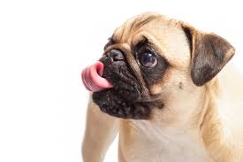

Los pugs son adorables

El Pug (también conocido como carlino o doguillo) es una raza de perro con origen histórico en China,
pero con el patrocinio del Reino Unido.
Es un perro:
- bajo y de aspecto cuadrado y compacto,
- la cabeza grande, redondeada y de aspecto sólido,
- está cubierta de pliegues;
- el hocico es cuadrado y chato;
- los ojos, grandes y oscuros;
- tiene las patas rectas y la cola rizada.
- El pelo es apretado, suave y brillante.